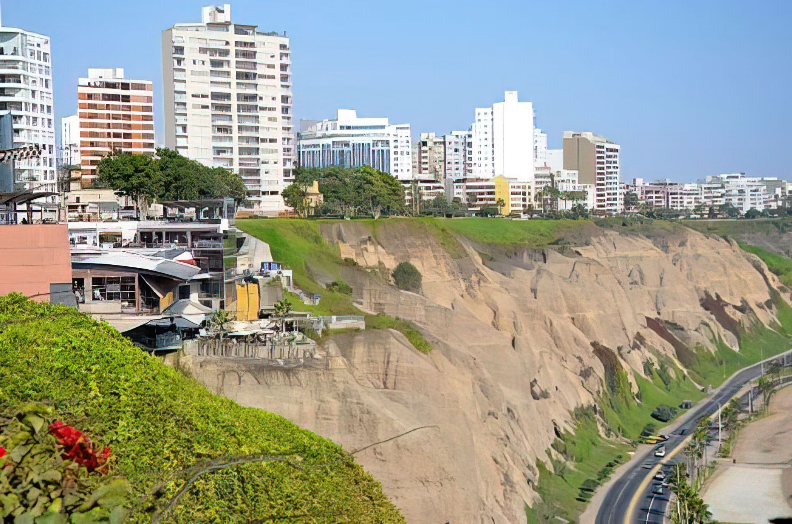
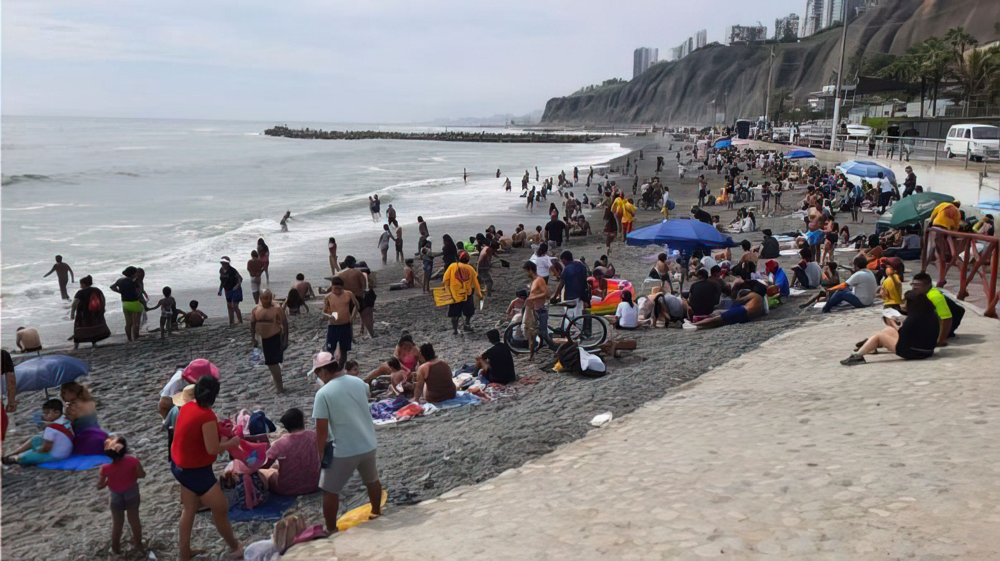

3 días y 2 noches - Tour por el Circuito de playas de la Costa Verde
Lima, Perú

- 
- 
Descripcion General
La atracción principal de la costa verde Lima son sus playas, que, aunque no son cálidas y cristalinas, son muy visitadas por surfistas. La única playa de arena se encuentra a nivel de Chorrillos y es muy visitada durante el verano. Los parques y malecones de la Costa verde son ideales para dar un paseo caminando. Todo esto acompañado por el sonido del mar. Desde la Costa verde tendrás una bonita perspectiva de Lima. Podrás ver como los edificios se erigen por encima del acantilado.
- Nadar en la hermosa playa.
- Caminar por el hermoso recorrido de la costa.
- Paracaidas deportivo.
- Comer en restaurantes con una hermosa vista al mar.
- Tomarse fotos.
Itinerario
Dia 1 - Recorrido por los lugares más icónicos de Lima
Explore la ciudad de Lima, conocida por su hermosa arquitectura, historia y deliciosa comida. Te desplazarás por la ciudad en la comodidad de un vehículo privado con nuestro guía turístico experimentado. Sera recogido en su alojamiento y en la noche será llevado a uno de los restaurantes más reconocidos de Lima según sea el platillo que espera consumir. Después regresara a su estancia en su hotel.
Dia 2 – Surf en las Playas de Chorrillos
Los llevaremos a las mejores playas de este distrito donde pueda optar por practicar surf, previas lecciones si es necesario, o optar por disfrutar de su estadía en estas playas tan visitadas. A la hora del almuerzo lo llevaremos a un restaurante que prepara los mas deliciosos platillos marinos. En la tarde podrá optar que lo llevemos devuelta a su hotel o quedarse hasta las 8 de la noche.
Dia 3 – Paracaidismo deportivo por la Costa Verde
Podrá experimentar el deslizarse por el aire con su instructor y ver los distritos de Magdalena, San Isidro, Miraflores y San Miguel, que conforman la Costa Verde de Lima. El vuelo dura entre 10 y 15 minutos y todos los participantes recibirán una tarjeta de memoria SD con un vídeo en alta definición de su vuelo para compartir con su familia y amigos. De esta forma concluirá su última estadía por la Costa Verde ¡Fin de nuestro servicio!